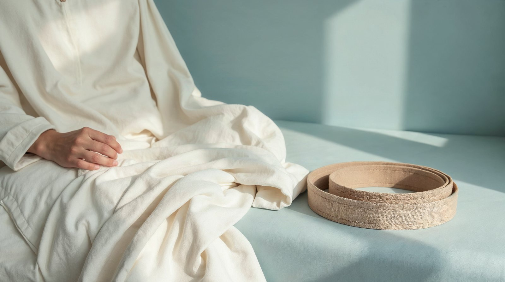
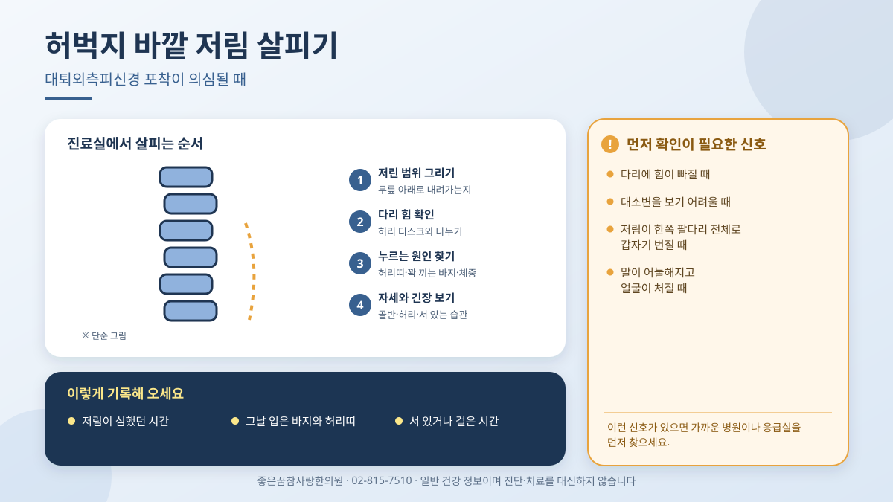

이종호 한의사 감수좋은꿈참사랑한의원 대표원장 (한의사 면허번호 19769)발행 2026-11-26 · 수정 2026-11-26
이 글의 차례
허리띠를 조금 더 조여 맨 날이었습니다. 오후가 되자 허벅지 바깥쪽이 손바닥만 한 크기로 화끈거리기 시작합니다. 손으로 만져 보니 피부가 남의 살처럼 멍멍하고, 바지가 스칠 때마다 따끔따끔합니다. 그런데 다리에 힘은 멀쩡하고, 허리도 그다지 아프지 않습니다.
진료실에서 이런 증상을 말씀하시는 분들은 대개 허리 디스크를 먼저 걱정하십니다. 다리가 저리면 허리부터 떠올리는 것이 자연스럽지요. 그런데 저린 자리가 허벅지 앞바깥쪽 한 군데에만 머물고, 무릎 아래로는 내려가지 않는다면 다른 가능성을 함께 생각해 봅니다.
그 가운데 하나가 대퇴외측피신경 포착, 흔히 이상지각성 대퇴신경통이라고 부르는 상태입니다. 이름은 어렵지만 내용은 단순합니다. 허벅지 바깥 피부의 감각을 맡은 가는 신경이 골반 앞쪽 뼈 근처에서 눌리면서 생기는 저림과 화끈거림입니다.
이 글에서는 이 신경이 어디를 지나는지, 왜 눌리는지, 허리 디스크와는 어떻게 다른지, 그리고 생활에서 무엇을 바꿔 볼 수 있는지를 차근차근 정리해 보겠습니다.
대퇴외측피신경은 어디를 지나나요
대퇴외측피신경은 허리 쪽 신경에서 갈라져 나와 골반 안쪽을 따라 내려오다가, 골반 앞쪽에 툭 튀어나온 뼈 바로 안쪽 아래에서 사타구니 인대 밑을 지나 허벅지로 나옵니다. 그리고 허벅지 앞바깥쪽 피부의 감각을 맡습니다.
이 신경은 근육을 움직이는 신경이 아니라 피부의 감각만 맡는 신경입니다. 그래서 이 신경이 눌리면 피부가 저리고 화끈거리고 멍멍해지지만, 다리에 힘이 빠지거나 무릎이 꺾이는 일은 생기지 않는 것이 특징입니다.
문제는 신경이 사타구니 인대 밑을 지나는 자리가 좁고 꺾여 있다는 점입니다. 이 자리는 바깥에서 허리띠나 꽉 끼는 바지가 누르기 쉽고, 안에서는 뱃살이나 자세 때문에 당겨지기 쉬워서, 작은 압박에도 신경이 예민해질 수 있습니다.
왜 이 신경이 눌리게 될까요
가장 흔한 이유는 바깥에서 누르는 압박입니다. 허리띠를 꽉 조이거나, 허리가 꽉 끼는 바지와 보정 속옷을 입거나, 공구 벨트나 무거운 가방 끈이 골반 앞쪽을 오래 누르면 신경이 지나는 자리가 눌립니다.
체중 변화도 영향을 줍니다. 배 둘레가 늘어나면 아랫배가 사타구니 인대 쪽을 밀어 신경이 꺾이는 각도가 커집니다. 임신 후반기에 이 증상이 생기는 분이 있는 것도 같은 이유이고, 반대로 짧은 기간에 체중이 크게 줄어도 생길 수 있습니다.
오래 서 있거나 오래 걷는 일, 허리를 뒤로 젖힌 자세가 이어지는 일, 한쪽 다리에 체중을 싣고 서는 습관도 신경을 당기게 할 수 있습니다. 골반 근처 수술 뒤, 오래 엎드린 자세로 있던 뒤, 당뇨로 신경이 예민해진 분에게서도 볼 수 있습니다.
어떤 느낌으로 나타나나요
허벅지 앞바깥쪽, 대개 손바닥 한두 개 크기의 자리가 저리고 화끈거리며, 벌레가 기어가는 듯하거나 찌릿한 느낌을 말씀하십니다. 그 자리를 손으로 만지면 다른 쪽보다 감각이 둔하고 남의 살처럼 느껴지기도 합니다.
특이한 점은 피부가 예민해져서 옷이 스치기만 해도 따갑게 느껴지는 경우가 있다는 것입니다. 꽉 끼는 청바지를 입은 날, 오래 서 있던 날 심해지고, 앉아서 엉덩이를 조금 굽히고 있으면 덜해지는 경우가 많습니다.
대부분 한쪽에만 생기지만 양쪽에 나타나기도 합니다. 증상이 몇 주 오가다 저절로 가라앉는 분도 있고, 압박하는 원인이 이어지면 몇 달씩 남는 분도 있습니다. 그래서 무엇이 누르고 있는지 찾는 것이 가장 중요합니다.
허리 디스크로 인한 다리 저림과는 어떻게 다른가요
허리 디스크나 척추관 협착증으로 생기는 다리 저림은 대개 엉덩이에서 시작해 허벅지 뒤나 옆을 지나 종아리, 발까지 길게 내려갑니다. 허리를 숙이거나 기침할 때 저림이 심해지고, 다리 힘이 빠지거나 발목을 들기 어려운 경우도 있습니다.
반면 대퇴외측피신경 포착은 저림이 허벅지 앞바깥쪽 한 자리에 머물고 무릎 아래로 내려가지 않는 경우가 많습니다. 다리 힘과 무릎 반사는 그대로이고, 허리를 움직일 때보다 허리띠를 조이거나 오래 서 있을 때 심해지는 편입니다.
다만 허리 위쪽 신경 뿌리가 눌려도 허벅지 앞쪽이 저릴 수 있고, 두 가지가 함께 있는 경우도 있습니다. 그래서 진료 때 저린 범위를 손으로 그려 보시고, 허리 움직임과 다리 힘을 함께 확인해 구분합니다. 필요하면 정형외과나 신경과 검사를 권해 드립니다.
허벅지 바깥이 뻐근한 다른 경우와 헷갈릴 때
허벅지 바깥이 뻐근하게 아프다고 모두 신경 문제는 아닙니다. 엉덩이 옆 힘줄이나 허벅지 바깥의 장경인대가 긴장해서 생기는 통증은 저림보다는 뻐근함과 당김이 중심이고, 누르면 근육과 힘줄 자리가 아픕니다. 계단과 달리기 뒤에 심해지는 편입니다.
대퇴외측피신경 포착은 근육이 아픈 것이 아니라 피부의 감각이 달라지는 것이 핵심입니다. 피부를 살짝 쓸었을 때 양쪽 느낌이 다르거나, 따갑고 화끈거린다면 신경 쪽을, 깊은 곳이 뻐근하고 누를 때 아프다면 근육과 힘줄 쪽을 먼저 생각해 볼 수 있습니다.
겨울과 연말에 더 자주 보이는 이유
겨울이 되면 두꺼운 내복과 기모 바지, 그 위에 허리띠까지 겹쳐 입으면서 골반 앞쪽을 누르는 힘이 커집니다. 연말 모임이 잦아 체중과 배 둘레가 늘어나는 시기이기도 해서, 이 무렵 허벅지 바깥 저림을 말씀하시는 분이 늘어납니다.
추운 날 몸을 웅크리고 걷거나, 빙판길이 무서워 다리에 힘을 주고 종종걸음을 걸으면 골반과 허벅지 주변 근육도 함께 긴장합니다. 겨울에는 옷의 두께를 겹으로 나누고 허리 부분은 넉넉하게 입으시는 것만으로도 도움이 될 수 있습니다.
얼마나 지나면 가라앉나요
누르는 원인을 덜어 주면 몇 주에서 몇 달에 걸쳐 서서히 가라앉는 경우가 많습니다. 다만 화끈거림은 줄어도 멍멍한 감각은 조금 더 오래 남기도 합니다. 그래서 하루하루의 느낌보다 저린 범위가 줄어드는지를 보시는 것이 좋습니다.
원인을 바꿨는데도 몇 달째 그대로이거나 오히려 범위가 넓어진다면, 다른 원인이 함께 있는지 정형외과나 신경과에서 확인해 보시길 권합니다.
자주 헷갈리는 것
첫째, 다리가 저리면 허리 디스크라는 생각입니다. 저림의 위치와 범위, 다리 힘의 변화를 함께 보면 원인이 다른 곳에 있는 경우가 적지 않습니다. 허리만 살피다가 허리띠 하나를 바꿔 편해지는 분도 계십니다.
둘째, 저리면 그 자리를 세게 주무르면 풀린다는 생각입니다. 이 경우는 근육이 뭉친 것이 아니라 피부 신경이 예민해진 것이라, 허벅지를 세게 주무르거나 문질러도 크게 달라지지 않거나 오히려 따가움이 심해질 수 있습니다. 누르는 원인을 덜어 주는 것이 먼저입니다.
셋째, 감각이 둔하니 큰일이라는 걱정입니다. 이 신경은 피부 감각만 맡기 때문에 다리 힘에는 영향을 주지 않습니다. 다만 저림의 범위가 넓어지거나 힘이 빠진다면 다른 원인을 확인해야 하니 그때는 꼭 말씀해 주세요.
먼저 이렇게 여쭙니다
처음 오시면 저는 대략 이런 순서로 여쭙니다. 미리 생각해 오시면 이야기가 훨씬 수월해집니다.
- 저리고 화끈거리는 자리를 손으로 짚어 보시면 어디부터 어디까지인가요?
- 저림이 무릎 아래나 발까지 내려가나요?
- 다리에 힘이 빠지거나 걸을 때 다리가 꺾이는 느낌이 있나요?
- 허리띠, 꽉 끼는 바지, 보정 속옷, 공구 벨트를 자주 하시나요?
- 최근 체중이 늘거나 줄었나요? 임신 중이신가요?
- 오래 서 있거나 걷는 일, 한쪽 다리로 서는 습관이 있나요?
- 당뇨나 갑상선 질환처럼 함께 관리하는 질환과 드시는 약이 있나요?
정확히 답하지 못하셔도 괜찮습니다. 저린 자리를 볼펜으로 표시해 사진을 찍어 오시거나, 증상이 심했던 날 입은 옷을 떠올려 오시는 것만으로도 많은 실마리가 됩니다.
일상에서 먼저 해 볼 수 있는 것
이 증상은 누르는 원인을 덜어 주는 것이 가장 중요한 출발점입니다. 옷과 자세, 체중처럼 생활 속 작은 것부터 바꿔 보세요.
- 허리띠를 한 칸 느슨하게 하거나 멜빵, 고무줄 허리 바지로 바꿔 보기
- 꽉 끼는 청바지와 보정 속옷은 증상이 가라앉을 때까지 잠시 쉬기
- 공구 벨트나 무거운 가방 끈이 골반 앞쪽을 누르지 않게 위치 바꾸기
- 오래 서 있을 때는 양쪽 다리에 고르게 체중을 싣고 틈틈이 앉아 쉬기
- 허리를 뒤로 젖힌 채 오래 서 있지 않기
- 체중이 늘었다면 허리둘레를 함께 기록하며 천천히 줄여 가기
엉덩이 앞쪽 근육이 짧아져 있으면 신경이 지나는 자리가 당겨질 수 있습니다. 한쪽 무릎을 바닥에 대고 앞으로 천천히 체중을 옮기는 고관절 앞쪽 스트레칭을 가볍게 해 보세요. 저림이 심해지면 바로 멈추시면 됩니다.
임신 중이라면 배가 커지면서 생기는 경우가 많고 출산 뒤 가라앉는 분이 많습니다. 다만 저림의 범위가 넓거나 다른 증상이 함께 있다면 먼저 산부인과에 알려 상의하시고, 한의원 진료가 필요하다면 임신 중임을 먼저 말씀해 주세요.
잠자리에서는 저린 쪽을 아래로 오래 눌러 눕지 않도록 하고, 옆으로 누울 때 무릎 사이에 베개를 끼워 골반이 비틀리지 않게 하면 편하다는 분이 많습니다.
한의원에서 함께 살필 수 있는 경우
- 허벅지 바깥 저림이 허리와 골반, 엉덩이의 긴장과 함께 있는 경우
- 오래 서서 일한 날마다 허벅지 바깥이 화끈거리고 따가운 경우
- 저림 때문에 잠자리가 불편하고 신경이 쓰여 잠이 얕은 경우
- 허리 디스크와 함께 있는지 헷갈려 저림의 양상을 정리하고 싶은 경우
- 체중 변화와 함께 생긴 증상이라 생활 리듬을 함께 살피고 싶은 경우
좋은꿈참사랑한의원에 오시면 먼저 아래 '먼저 확인이 필요한' 신호가 없는지부터 봅니다. 그다음 맥을 짚고, 저린 범위와 감각을 양쪽 비교하며, 골반 앞쪽과 허리, 엉덩이 주변의 긴장, 서 있는 자세를 함께 살핍니다.
진찰한 내용을 바탕으로 골반과 허리 주변의 긴장을 푸는 침, 온열 관리, 옷과 자세, 스트레칭 안내 가운데 지금 상태에 맞는 것을 정합니다. 허리 쪽 원인이 함께 의심되면 정형외과나 신경과 검사를 받아 보시도록 안내해 드립니다.
한약 상담을 함께 할 때는 드시는 약을 모두 확인하고 신중하게 정합니다. 당뇨처럼 신경에 영향을 주는 질환을 관리 중이시라면 해당 진료는 그대로 이어 가시고, 처방받은 약은 상의 없이 멈추지 않으시길 바랍니다.
이렇게 기록해 오시면 상담이 쉬워집니다
이 증상은 "무엇을 입고, 어떤 자세로, 얼마나 지낸 날" 심해지는지가 가장 큰 단서입니다. 1~2주만 간단히 적어 보세요.
- 저림과 화끈거림이 심했던 시간대와 정도
- 그날 입은 바지, 허리띠, 속옷, 가방이나 벨트
- 오래 서 있거나 걸은 시간, 앉아 있던 시간
- 옷을 바꾸거나 스트레칭을 한 날의 변화
- 허리 통증이나 다른 쪽 다리 저림이 함께 있었는지
저린 자리를 일주일에 한 번 볼펜으로 표시해 사진을 남겨 두시면, 범위가 줄어드는지 넓어지는지가 한눈에 보입니다. 사진은 같은 자세, 같은 조명에서 찍으시면 비교하기 더 쉽습니다.

허리띠 한 칸의 여유
허벅지 바깥의 화끈거림은 생명을 위협하는 병은 아니지만, 하루 종일 신경을 쓰이게 하고 잠까지 방해하는 꽤 성가신 불편입니다. 그리고 그 원인이 생각보다 가까운 곳, 허리띠나 바지 허리춤에 있는 경우가 많습니다.
오늘은 허리띠를 한 칸 풀고, 저린 자리를 볼펜으로 표시해 보세요. 일주일 뒤 그 자리가 어떻게 달라졌는지를 들고 오시면 함께 다음 걸음을 정해 보겠습니다.
이런 증상은 먼저 확인이 필요합니다
- 허벅지 저림과 함께 다리에 힘이 빠지거나 대소변을 보기 어려워지는 경우
- 저림이 갑자기 한쪽 팔다리 전체로 번지거나 말이 어눌해지고 얼굴이 처지는 경우
이런 신호가 있으면 한의원보다 가까운 병원이나 응급실을 먼저 찾으세요.
함께 읽으면 좋은 글
- 허리 디스크 초기 신호와 다리 저림은 어떻게 구분하나요?
- 걸으면 다리가 저려 자꾸 쉬어야 하는 척추관 협착증은 어떻게 살피나요?
- 임신 중 허리와 골반, 치골이 아플 때는 무엇을 살피고 생활은 어떻게 하나요?
- 당뇨가 있는데 발끝이 저리고 화끈거리거나 감각이 둔해지는 말초신경병증은 어떻게 살피나요?
- 오래 앉아 공부하면 다리가 붓고 저릴 때는 무엇을 살피나요?

여쭙는 것
- 저리고 화끈거리는 자리를 손으로 짚어 보시면 어디부터 어디까지인가요?
- 저림이 무릎 아래나 발까지 내려가나요?
- 다리에 힘이 빠지거나 걸을 때 다리가 꺾이는 느낌이 있나요?
생활에서 해 볼 것
- 허리띠를 한 칸 느슨하게 하거나 멜빵, 고무줄 허리 바지로 바꿔 보기
- 꽉 끼는 청바지와 보정 속옷은 증상이 가라앉을 때까지 잠시 쉬기
- 공구 벨트나 무거운 가방 끈이 골반 앞쪽을 누르지 않게 위치 바꾸기
한의원에서 함께 살필 것
- 허벅지 바깥 저림이 허리와 골반, 엉덩이의 긴장과 함께 있는 경우
- 오래 서서 일한 날마다 허벅지 바깥이 화끈거리고 따가운 경우
- 저림 때문에 잠자리가 불편하고 신경이 쓰여 잠이 얕은 경우
먼저 확인이 필요한 신호
- 허벅지 저림과 함께 다리에 힘이 빠지거나 대소변을 보기 어려워지는 경우
- 저림이 갑자기 한쪽 팔다리 전체로 번지거나 말이 어눌해지고 얼굴이 처지는 경우
한눈에 보는 표
| 구분 | 핵심 |
|---|---|
| 여쭙는 것 | 저리고 화끈거리는 자리를 손으로 짚어 보시면 어디부터 어디까지인가요? 저림이 무릎 아래나 발까지 내려가나요? |
| 생활에서 해 볼 것 | 허리띠를 한 칸 느슨하게 하거나 멜빵, 고무줄 허리 바지로 바꿔 보기 꽉 끼는 청바지와 보정 속옷은 증상이 가라앉을 때까지 잠시 쉬기 |
| 한의원에서 함께 살필 것 | 허벅지 바깥 저림이 허리와 골반, 엉덩이의 긴장과 함께 있는 경우 오래 서서 일한 날마다 허벅지 바깥이 화끈거리고 따가운 경우 |
| 먼저 확인이 필요한 신호 | 허벅지 저림과 함께 다리에 힘이 빠지거나 대소변을 보기 어려워지는 경우 저림이 갑자기 한쪽 팔다리 전체로 번지거나 말이 어눌해지고 얼굴이 처지는 경우 |
자주 묻는 질문
허벅지 바깥만 저린데 허리 디스크일 수도 있나요?
허리 위쪽 신경 뿌리가 눌려도 허벅지 앞쪽이 저릴 수 있어서 함께 확인합니다. 저림이 무릎 아래로 내려가는지, 다리 힘이 빠지는지를 보고, 필요하면 정형외과나 신경과 검사를 권해 드립니다.
허리띠를 바꾸는 것만으로도 달라지나요?
바깥에서 누르는 압박이 원인인 경우가 많아서 허리띠와 바지를 느슨하게 바꾸는 것만으로도 편해지는 분이 있습니다. 몇 주 정도 바꿔 보며 변화를 기록해 보세요.
저린 자리를 주무르면 도움이 되나요?
근육이 뭉친 것이 아니라 피부 신경이 예민해진 경우라 세게 주무르면 오히려 따가움이 심해질 수 있습니다. 누르는 원인을 덜어 주는 것이 먼저입니다.
임신 중에 허벅지 바깥이 저려요.
배가 커지면서 생기는 경우가 있고 출산 뒤 가라앉는 분이 많습니다. 먼저 산부인과에 알려 상의하시고, 한의원 진료가 필요하면 임신 중임을 먼저 말씀해 주세요.
좋은꿈참사랑한의원은 재진 때 지난번 이야기부터 이어서 여쭙니다. 진료시간과 예약은 오시는 길에서 확인하세요.
어디서 상담받을 수 있나요?
좋은꿈참사랑한의원은 서울 동작구 만양로2길 2 신성빌딩 3층·5층(서울 동작구 상도동, 7호선 상도역 3번 출구 근처)에 있습니다. 한의사 3명(이종호 대표원장, 조영기 수석진료원장, 정원영 진료원장)이 진료합니다. 진료시간은 평일 09:30~20:00(점심 13:00~14:00), 토·일·공휴일 09:30~15:00이며, 방문 전 전화로 확인을 권합니다. 예약은 네이버 예약, 카카오톡 상담, 전화 02-815-7510로 받습니다.
이 글은 일반적인 건강 정보이며 개인의 진단이나 치료를 대신하지 않습니다. 증상이 있거나 복용 중인 약이 있다면 진료를 통해 확인하세요. 치료 효과는 개인마다 다를 수 있습니다.
작성 기준: 일반적으로 알려져 있는 건강 정보를 참고해 정리했습니다(대표원장 감수). 증상 기록은 1~2주 동안 하루 1회, 비슷한 시간에 적어 오시면 지난 상태와 비교하기 쉽습니다.